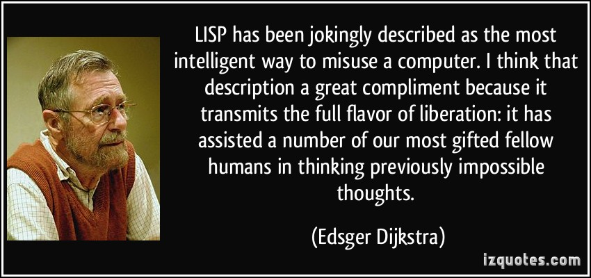
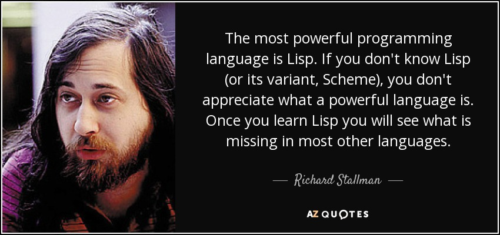

Lisp
- Inspired by $\lambda$-Calculus
- Hyper-productive syntax
Clojure
- Extension to Lisp
- Supports a slightly richer set of syntactic sugars for readability
- Runs on JVM
Invented by John McCarthy, 1958
It’s been the foundation of A.I. research ever since.


$\lambda x. e$
Example:
$\lambda x.\lambda y. x+y$
$\lambda xy. x+y$ (with syntactic abbreviation)
$(e_1 e_2)$
Example:
$(((\lambda xy. x+y)\ 1)\ 2)$
$((\lambda xy. x+y)\ 1\ 2)$ (abbreviation)
Observation:
Application is always a list of expressions. The first expression is the function, and the rest of the list is arguments.
LISP = LISt Processing
Results:
- The entire language only needs one data structure: lists.
- Simplicity kicks ass.
Simplicity is hard work. But, there’s a huge payoff. The person who has a genuinely simpler system - a system made out of genuinely simple parts, is going to be able to [e]ffect the greatest change with the least work. He’s going to kick your ass. He’s gonna spend more time simplifying things up front and in the long haul he’s gonna wipe the plate with you because he’ll have that ability to change things when you’re struggling to push elephants around.
Rich Hickey, Inventor of Clojure
Every language must support data structures:
C:
Arrays:
(char*)[] namesStructures:struct { char *name; }
Javascript:
JSON:
{name: "Jack", age: 39}
Lisp:
(Nested) Lists:
(1 (2 3) (4 (5 6 7)))
Data
Given a language $L$, let $\mathbf{D}(L)$ be all possible data structures that can be represented by the language.
Every language must support a (sometimes VAST) collection of programming constructs:
C:
for(int i=0; i < 10; i++) { ... }
Rust:
fn foo(v1: Vec<i32>, v2: Vec<i32>) -> Vec<i32> {...}
Lisp:
(Nested) lists:
(when (nice weather) (go outside))
Program
Given a language $L$, let $\mathbf{P}(L)$ be all possible (valid) programs that can be constructed in the langauge.
Definition
A language $L$ is homoiconic if:
$$ \mathbf{P}(L) \subseteq \mathbf{D}(L) $$
Make sure you understand this property.
It means that a homoiconic language can always digest its own program as data, and treat its data as programs.
S-expressions can be two things:
Atoms:
Atoms are values such as strings, characters, numbers or symbols.
Lists:
A bracket enclosed, whitespace separated list of elements. Each element can be an atom or a list.
S-expression:
A s-exp is a list.
s-expr : '(' expr-list ')'
expr-list : elem expr-list
| <Empty>
elem : s-expr
| <Atom>
! This summarizes the Lisp syntax.
S-expressions are so simple that designing programming constructs with with becomes obvious.
- !
- Declaring a function
- Declaring a variable (this is done with a more general mechanism known as name binding).
- Invoking (evaluating) a function with given parameters
- When a list is just a list
- Flow control
Recall in LC:
$$\lambda xyz. \left<\mathrm{expression}\right>$$
Here, we need a function name.
$$\left<\mathrm{name}\right> := \lambda xyz. \left<\mathrm{expression}\right>$$
Turning it into a S-expression:
(defun <name> ...)
Treat the parameters as a list
(defun <name> (x y z) <body>)
This approach of encoding function declaration to s-expressions is used by Common Lisp.
(define (<name> x y z) <body>
Note the function name is grouped together with the parameters. This approach is used by Racket (formerly known as Scheme).
(define PI 3.1415)
Create a scope with a new nested list:
(let ...)
Create additional “local” variables in the scope:
(let ((x <expression>)
(y <expression>)) <body>)
! This is the syntax of Common Lisp.
Because this is considered to be the most frequently used programming construct, it is represented simply by a list.
(<name> <expression> <expression> ...)
What if we really mean to represent a list of elements?
(quote (<element> <element> ...))
! This suppresses the inner list as function evaluation.
(if <test> <when-true> <when-false>)
The if start of a list indicates that it is a branching form.
<test>, is the condition.<when-true>, is evaluated if the condition is true.<when-false>, is evaluated if the condition is false.Let’s flex the power of simplicity.
define, let, if.Challenge
Compute the factorial of 100.
Challenge
Compute the factorial of 100.
(define (factorial n)
(if (< n 2)
n
(* n (factorial (- n 1)))))
Lisp is simple (and thus powerful) in syntax. At the same time, it’s also simple in terms of the data structure it can support. No native support for vectors (dynamic list with random access), hash-maps (associative collections), sets (list without order or multiplicity), …
Clojure is Lisp:
Clojure faithfully minimizes syntax by sticking with s-expressions for programming constructs, so it remains homoiconic.
Clojure extends Lisp:
It adds more syntax (YES…) to support a richer data constructors for vectors, hash-map etc… It also support even more succinct definition of functions.
(defn f [n] (if (< n 2) n (* n (f (dec n)))))
! The dec function decreases an integer by 1. You might want to know about bigint function which converts an integer to a BigInteger, when computing the value (f 100).
(import java.util.Vector)
(let [v (java.util.Vector. (quote (1 2 "blah")))]
(println "Last element =" (.lastElement v)))
! Wow, we are converting a Lisp list (1 2 "blah") to a Java vector object, and using the method java.util.Vector.lastElement to access the last element. … And we are still just using nested lists.
Once we have lists, we immediately have an entire programming language.
All variations of PL based on (nested) lists are referred to as Lisp.
Clojure is a particularly attactive Lisp as it can immediately tap into the vast ecosystem of Java libraries.